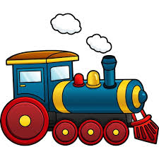

Trains
A train is a series of connected vehicles that run along a railway track and transport people or freight. Trains are typically pulled or pushed by locomotives, though some are self-propelled, such as multiple units. Passengers and cargo are carried in railroad cars, also known as wagons. Trains are designed to a certain gauge, or distance between rails. Most trains operate on steel tracks with steel wheels, the low friction of which makes them more efficient than other forms of transport.
Links